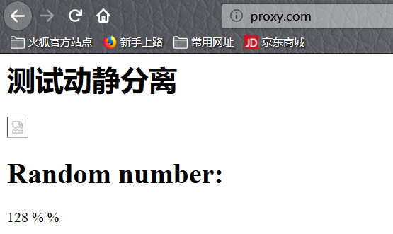

Nginx 的动静分离
我们通过中间件将动态请求和静态请求进行分离，减少了不必要的请求消耗和延时。
动静分离后，即使动态服务不可用，但静态资源不会受到影响。
应用实例
准备环境
| 系统 |
角色 |
主机名 |
IP |
服务 |
| CentOS 7.2 |
反向代理 |
Nginx_Proxy |
192.168.1.10 |
Nginx：v1.16.1 |
| CentOS 7.2 |
静态资源 |
Nginx_Static |
192.168.1.11 |
Nginx：v1.16.1 |
| CentOS 7.2 |
动态资源 |
Tomcat_Server |
192.168.1.12 |
Tomcat/7.0.76 |
配置服务器
在Nginx Static主机中配置静态资源（以图片为例）
1
2
3
4
5
6
7
8
9
10
11
12
13
14
15
| [root@Nginx_Static]
server {
listen 80;
server_name static.com;
root /data/www/static;
index index.html;
location ~* .*\.(png|jpg|gif)$ {
root /data/www/static/images;
}
}
[root@Nginx_Static]
[root@Nginx_Static]
[root@Nginx_Static]
|
在Tomcat_Server主机中配置动态资源（以随机数为例）
1
2
3
4
5
6
7
8
9
10
11
12
13
14
15
16
17
18
19
20
|
[root@Tomcat_Server]
[root@Tomcat_Server]
[root@Tomcat_Server]
<%@ page language="java" import="java.util.*" pageEncoding="utf-8"%>
<HTML>
<HEAD>
<TITLE>JSP Test Page</TITLE>
</HEAD>
<BODY>
<%
Random rand = new Random();
out.println("<h1>Random number:</h1>");
out.println(rand.nextInt(99)+100);
%>
</BODY>
</HTML>
[root@Tomcat_Server]
|
在Nginx_Proxy主机上配置代理，实现访问jsp和png
1
2
3
4
5
6
7
8
9
10
11
12
13
14
15
16
17
18
19
20
21
22
23
24
| [root@Nginx_Proxy]
upstream static {
server 192.168.1.11:80;
}
upstream java {
server 192.168.1.12:8080;
}
server {
listen 80;
server_name proxy.com;
location / {
root /data/www/whole;
index index.html;
}
location ~ .*\.(png|jpg|gif)$ {
proxy_pass http://static;
}
location ~ .*\.jsp$ {
proxy_pass http://java;
}
}
[root@Nginx_Proxy]
|
通过代理服务器测试访问动态及静态资源


在Nginx_Proxy主机上将动态和静态资源合并为html文件
1
2
3
4
5
6
7
8
9
10
11
12
13
14
15
16
17
18
19
20
21
22
23
24
25
26
27
28
| [root@Nginx_Proxy]# mkdir /data/www/whole
[root@Nginx_Proxy]# vim /data/www/whole/index.html
<html lang="en">
<head>
<meta charset="UTF-8" />
<title>测试ajax和跨域访问</title>
<script src="http://libs.baidu.com/jquery/2.1.4/jquery.min.js"></script>
</head>
<script type="text/javascript">
$(document).ready(function(){
$.ajax({
type: "GET",
url: "http://proxy.com/java.jsp",
success: function(data) {
$("#get_data").html(data)
},
error: function() {
alert("fail!!,请刷新再试!");
}
});
});
</script>
<body>
<h1>测试动静分离</h1>
<img src="http://proxy.com/nginx.png">
<div id="get_data"></div>
</body>
</html>
|
使用浏览器测试访问，动态及静态资源能否加载在一个html文件中
关闭静态资源的nginx服务后，发现静态内容无法访问，但动态内容可以正常浏览

关闭动态资源的tomcat服务后，发现动态内容无法访问，但静态内容可以正常浏览